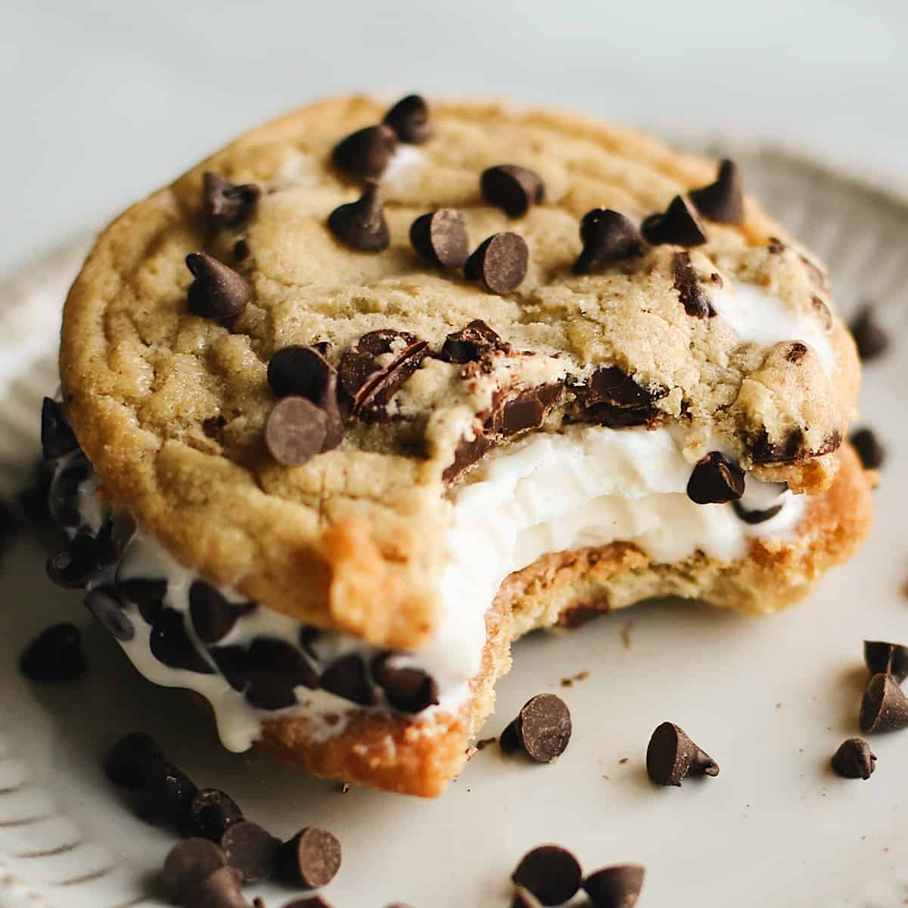

Chocolate-Chip Cookie Ice Cream Sandwich

The ice-cream-sandwich is an american-delicacy combining homemade cookies
and delicious ice cream.
The ice-cream-sandwich was first created in 1950 after the Second World War. Its creators had hoped
to make a dish so irresistible that anyone who tried it would immediately give up any ambitions
or hopes to conquer the world or do bad to others. In other words, the ice-cream-sandwich became the first
technology ever created with the sole intention of bringing about world peace.
As the ice-cream-sandwich began making its way around the world, people were shocked, not only by
its immaculate taste, but also for its incredibly beneficial psychological effects. Word
quickly spread about its incredbly properties and soon everybody wanted to try a bite of
this exquisite dish. As the ice-cream-sandwich and its followers began to grow around the world, so did
its enemies and the people who wanted to see its destruction. Eventually, two new superpowers
arose with one side supporting the ice-cream-sandwich and one seeking to destroy it. As nuclear war seemed
to be the inevitable end, both sides struck a truce which allowed the ice-cream-sandwich to retain
its tasty properties but would have to forgo its tranquil psychological effects.
Ingredients
- Vanilla Ice Cream
- All-purpose flour
- Cocoa Powder
- Salt
- Granulated Sugar
- Unsalted Butter
- Egg yolks
- Vanilla extract
Steps
- Soften the ice cream. Do this by leaving it out at room
temperature for approximately 30 minutes.
- Line a 9 by 13-inch baking dish with parchment paper, allowing the paper to overhang the sides.
Scoop the softened ice cream into the pan and smooth the top with a silicone spatula.
-
Place the pan in the freezer for at least one hour or until the ice cream s completely solid.
-
While you wait for the ice cream to harden, prepare the cookie dough. Start by lining 2 baking
sheets with parchment paper.
-
-
Add flour, cocoa, and salt in a medium bowl and whisk together until well incorporated. Set aside.
-
In the bowl of a stand mixer add sugar and butter and mix on medium speed for at least one minute using the
paddle attachment.
-
Once the mixture is nice and fluffy add the egg yolks and vanilla. Then slowly add in the dry mixture and
mix until just combined.
-
Remove the dough from the bowl and divide it in half. Then form each piece into an approximately 5-inch square.